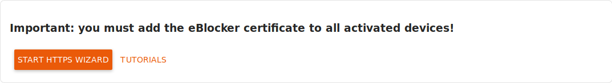
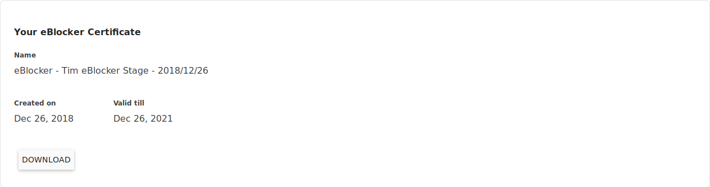
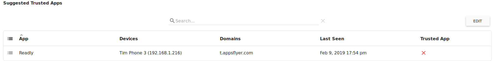
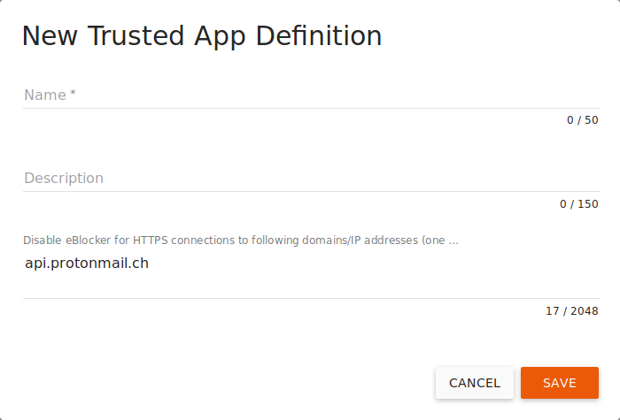
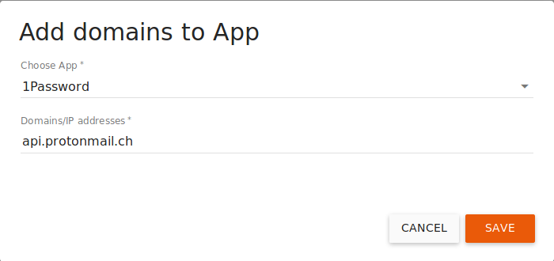
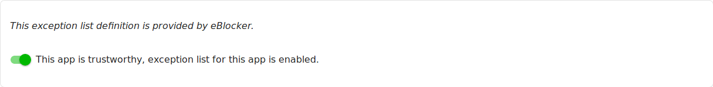
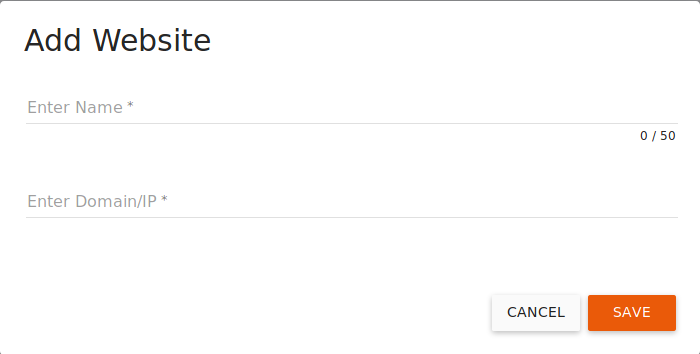
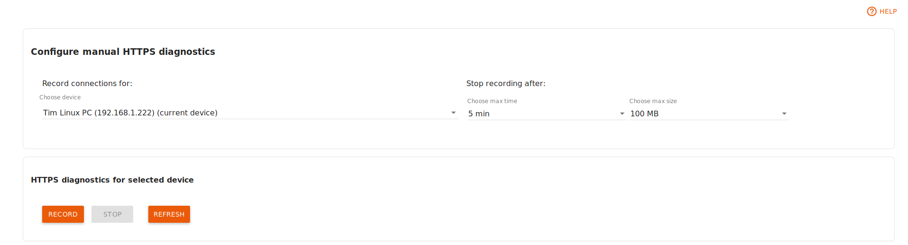

Deutsch | English
eBlocker Base ✕ / eBlocker Pro ✓ / eBlocker Family ✓
This page is divided into the following sections:
Important:
If you activate this function, you must be familiar with the advanced settings of your devices and deposit an encryption certificate on the devices in order to analyze the data stream through the eBlocker.
Prologue:
SSL stands for Secure Sockets Layer and is a protocol used to encrypt communication "end-to-end" between two communication partners. Sometimes you may also encounter the abbreviation TLS (TLS stands for Transport Layer Security). It is basically the same as SSL. If the standard Web protocol HTTP is encrypted using SSL, it is called HTTPS. You can recognize an encrypted loaded page by the URL starting with https:// Many browsers also display a green lock in the address bar.
Many websites, especially those of banks and online shops, are now protected with SSL encryption. This way you can be sure that you are actually communicating with the provider who's URL you have accessed and that no third party can change or read your entered data. However, not only reputable shops and banks use SSL. Tracking and advertising providers are also increasingly collecting their data via HTTPS/SSL. Your profile data is then sent to the tracking server in encrypted form, but of course this does not prevent the data collector from continuing to create a detailed profile of you.
Once HTTPS support is enabled in eBlocker, each eBlocker generates a unique device root certificate and a private key. This certificate is used to encrypt communication between your device and the eBlocker when the eBlocker loads an SSL-protected web page.
Once HTTPS is activated, the eBlocker terminates the encrypted connection so that the data stream can be analyzed. The eBlocker is the end of "end-to-end encryption". Since the browser expects an encrypted connection with HTTPS, the eBlocker then encrypts the communication to your end device. To do this, it is necessary to first include the so-called security certificate of your eBlocker in your operating system and then, if necessary, in the browsers with its own certificate store as described in Section 6.2. This certificate is sometimes also called a certificate for certification authorities, a root certificate, or a root certificate.
We have no access to your private key or your device and have done everything to protect the eBlocker from hackers - but of course there is no 100 percent security. We offer SSL support as an option. If you feel uncomfortable with the eBlocker decrypting the HTTPS connection, please do not activate this option.
We offer HTTPS support as an option. If you are uncomfortable with the eBlocker decrypting the HTTPS connection, please do not enable this option.
Without HTTPS support, eBlocker will protect you with its Domain Blocker.
Here you can read the difference between Pattern and Domain Blocker.
Activate the HTTPS function for your eBlocker by sliding the switch to the right.

Please note that the certificate must first be stored in your operating system and then, if necessary, in browsers with their own certificate store.
If you click on the HTTPS Assistant button, an assistant will guide you through the process of storing the eBlocker certificate. The link Instructions leads you to an article in which we describe the deposit of the eBlocker certificate step by step for the most important operating systems.
From here you can also store the eBlocker certificate using the HTTPS wizard. The link Instructions also leads you to an article in which we describe step by step how to deposit the eBlocker certificate for the most important operating systems.
Here you can view some information about your certificate.

If you click on the Download button, you can also save the eBlocker certificate to your computer. This may be necessary, for example, if you are using an app with its own certificate store (example: Thunderbird mail client).
The eBlocker certificate is automatically renewed four weeks before expiration.

After the renewal the new certificate must be taken up again on all devices!
You can also renew the eBlocker certificate manually at any time by clicking the Renew Now button.
Here you can examine the data stream of individual applications with a simple tool and create exceptions if an app or web page does not work correctly with HTTPS support enabled.

The recorded HTTPS connection errors will help you determine which apps are affected, or which Domains//IP addresses should be defined as exceptions for each app.
The eBlocker can detect domains that can be added to an existing trusted app exception. In the recording you will also be shown from which device and at what time the connection error was recorded.

With a click on the Edit button you can add the domain to this app exception. Then click the Mark as trusted button to save your selection.
In the Suggested Trusted Websites list, the eBlocker displays connection errors that could not be assigned to an existing app exception.

With a click on the button Edit you can select the domain you want to save.
There are three options for saving the domain:
Add new App
Use this option to create a new Exception app.

Assign a name for the Exception app and enter a short description if necessary.
The selected domains will be displayed here again.
Click the Save button to save your new App Exception. You will now find them in the Trusted Apps overview. Newly created App Exceptions are automatically activated after creation.
Add to existing App
Here you can add the selected domains to an existing App Exception.

Select an existing Apps exception and check the domains again. If you now click on the Save button, the domains specified here will automatically be added to the existing App Exception.
Add to whitelist
Here you can add the found domains to the list of Trusted Websites.

Assign a name here and check the domains again. If you now click on the Save button, the domains specified here will automatically be added to the list of Trusted Websites.
At the bottom of the page you will find the button Delete all recordings. If you click on this button, all recordings will be deleted.
Here you can see a list of predefined Trusted Apps.

If you have a problem with an App, then look here for the name of the App. Maybe there is already a predefined exception for this App. If so, then activate the exception by clicking on the exception and using the switch to activate the exception.
In the list you can see the name of the App, a short description, an excerpt of the allowed Domains/IPs and the status of the App. The status distinguishes between System owned App and User defined App.
You can easily enable or disable all exceptions in the Trusted Apps overview by changing the switch in front of the exception.
Please note that activated exception lists means that the corresponding Apps and Websites are not protected by the eBlocker and your data could be passed on to third parties.
To add a new App Exception click the New App definition button.

Enter a name and, if necessary, a description for the app.
Now you can enter one Domain / IP per line for these exceptions.
If you click on the Save button, this exception will be added to the list of exceptions and automatically activated for you.
Click the Edit button to delete an App exception from the list. Then select the affected App Exception and click the Delete or Reset App button.
Only predefined app exceptions can be reset if they have added additional domains to them.
In the list of App Exceptions, click an App Exception to edit it.

Here you can edit the name and description of the app by clicking on the pen.

Use this switch to activate the exception list. The eBlocker will then no longer control the communication to the specified domains / IPs.

Click the New button to add a domain / IP to this list.
Click the Edit button to delete a domain from the list. Then select the domain concerned and click on the Delete Domain/IP button.
Here you can see a list of Trusted Websites.

In this list you will see all domains that are exceptions to the Trusted Apps.
The list consists of the name, the Domain/IP, the name of the App Exception if applicable, and the status System owned Domain/IP or User defined Domain/IP.
If individual web pages are not compatible with the eBlocker, you can exclude them from eBlocker protection by clicking the Add Website button.

Enter a name for the exception and enter the Domain or IPs. After you click the Save button, this exception will be added to the list of Trusted Websites.
Click the Edit button to delete a Trusted Websites from the list. Then select the Web Exception concerned and click the Remove Website button.
Important: Only User defined Domain/IP Exceptions can be deleted here.
With the manual HTTPS diagnosis it is possible to record further errors - in addition to those found under "Communication failures" - and add them to the list of Trusted Apps.

Use the list buttons to select the device from your network where the errors occur, the maximum duration of the recording and the maximum size of the log. Default: 5 minutes, 100 MB.
Now use the App on the selected device when errors occur. After the automatic or manual stop of the recording, the eBlocker creates a list of the called domain names and the connected IP addresses, the used protocol and the eBlocker rules for you. In the last column you can agree or disagree with the recommended rule issued by the eBlocker.
The table rows of the analyzed connections can be adjusted individually for each called domain by clicking on them.
You can test the recorded apps and add them to a new app definition for the list of trusted apps.